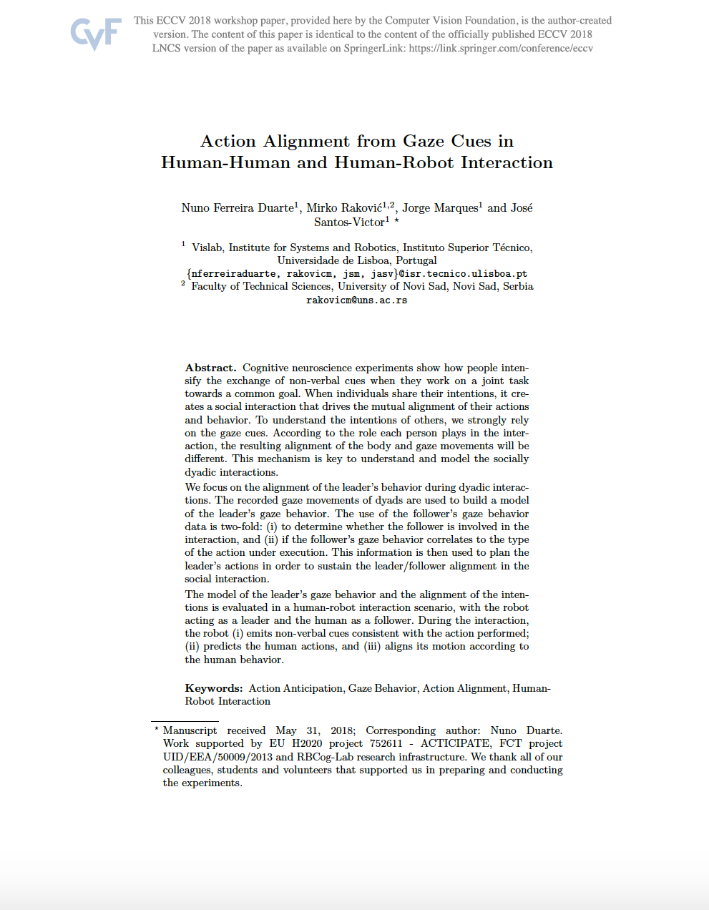

{{ page.title }}
European Conference on Computer Vision (ECCV 2018 - Workshop)
Nuno Ferreira Duarte Mirko Raković (1) Jorge Marques José Santos-Victor
University of Lisboa (1) University of Novi Sad

|
Abstract
Cognitive neuroscience experiments show how people intensify the exchange of non-verbal cues when they work on a joint task towards a common goal. When individuals share their intentions, it creates a social interaction that drives the mutual alignment of their actions and behavior. To understand the intentions of others, we strongly rely on the gaze cues. According to the role each person plays in the interaction, the resulting alignment of the body and gaze movements will be different. This mechanism is key to understand and model dyadic social interactions.
We focus on the alignment of the leader’s behavior during dyadic interactions. The recorded gaze movements of dyads are used to build a model of the leader’s gaze behavior. We use of the follower’s gaze behavior data for two purposes: (i) to determine whether the follower is involved in the interaction, and (ii) if the follower’s gaze behavior correlates to the type of the action under execution. This information is then used to plan the leader’s actions in order to sustain the leader/follower alignment in the social interaction.
The model of the leader’s gaze behavior and the alignment of the intentions is evaluated in a human-robot interaction scenario, with the robot acting as a leader and the human as a follower. During the interaction, the robot (i) emits non-verbal cues consistent with the action performed; (ii) predicts the human actions, and (iii) aligns its motion according to the human behavior.
|
Paper: [PDF] #Code: [GitHub]
|
Videos
Bibtex
@InProceedings{10.1007/978-3-030-11015-4_17,
author="Duarte, Nuno Ferreira
and Rakovi{\'{c}}, Mirko
and Marques, Jorge
and Santos-Victor, Jos{\'e}",
editor="Leal-Taix{\'e}, Laura
and Roth, Stefan",
title="Action Alignment from Gaze Cues in Human-Human and Human-Robot Interaction",
booktitle="Computer Vision -- ECCV 2018 Workshops",
year="2019",
publisher="Springer International Publishing",
address="Cham",
pages="197--212",
abstract="Cognitive neuroscience experiments show how people intensify the exchange of non-verbal cues when they work on a joint task towards a common goal. When individuals share their intentions, it creates a social interaction that drives the mutual alignment of their actions and behavior. To understand the intentions of others, we strongly rely on the gaze cues. According to the role each person plays in the interaction, the resulting alignment of the body and gaze movements will be different. This mechanism is key to understand and model dyadic social interactions.",
isbn="978-3-030-11015-4"
}